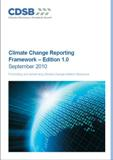

{kind=link}
 Investing in the sustainable economy
Investing in the sustainable economy지난 2년 동안 지인들과 캐나다 여행을 계획했었다. 여러 무리가 있었지만 오래 전부터 계획된 일이라 큰 맘 먹고 여행을 떠나기로 하고 지금은 캐나다 캘거리에서 이 글을 쓴다. 사실 나는 캐나다에 대해서 아는 바가 별로 없었다. 지난 2008년 “SRI in the Rockies”라는 회의에 참석하기 위해 ...
기후변화 보고 프레임워크 (CCRF)
발행일: 2010. 10 / 발행처: CDSB
기후변화 보고 프레임워크(CCRF)는 기후변화정보공시위원회(CDSB, 사무국-CDP)에서 발간한 기후변화정보의 사업보고서(Annual Report)를 통한 통합보고를 위한 기준입니다.
(http://www.kosif.org/board/bbs/board.php?bo_table=cdp_05&wr_id=95)
Investing in the sustainable economy
발행일 : 2012년 6월 / 발행서 : PRI
2012 유엔지속가능개발회의(Rio+20)가 지속가능경제로의 전환기에 투자가들의 역할에 대해 새롭게 조명하는 가운데, 이번 보고서를 통하여 Rio+20의 주제 및 녹색경제와 관련하여 기관투자가들의 현재 활동/직면한 과제 등에 대하여 알아보고자 합니다. 총 5개의 기업 활동에 대한 구체적 사례들입니다.
(http://www.kosif.org/board/bbs/board.php?bo_table=interior&wr_id=418)
- CDSB Kick-off workshop
- [공지]CDSB 한국프로젝트 Company Working Group 참여기업 모집
(http://www.kosif.org/board/bbs/board.php?bo_table=cdp_03&wr_id=21)
- 2012 Invester CDP 및 CDP SC, CDP WD 응답 마감 일정 안내
(http://www.kosif.org/board/bbs/board.php?bo_table=cdp_03&wr_id=20)
- 뮤추얼 펀드의 주주위임투표(proxy voting), 기후변화의 중대성 반영 결여
(http://www.kosif.org/board/bbs/board.php?bo_table=latest&wr_id=1617)
- "국민연금이 쏜다" 자산운용사 SRI펀드에 단비
(http://www.kosif.org/board/bbs/board.php?bo_table=latest&wr_id=1618)
- 김석동 ′′CSR 활동 우수기업, 제도적 지원하겠다′′
(http://www.kosif.org/board/bbs/board.php?bo_table=latest&wr_id=1619)